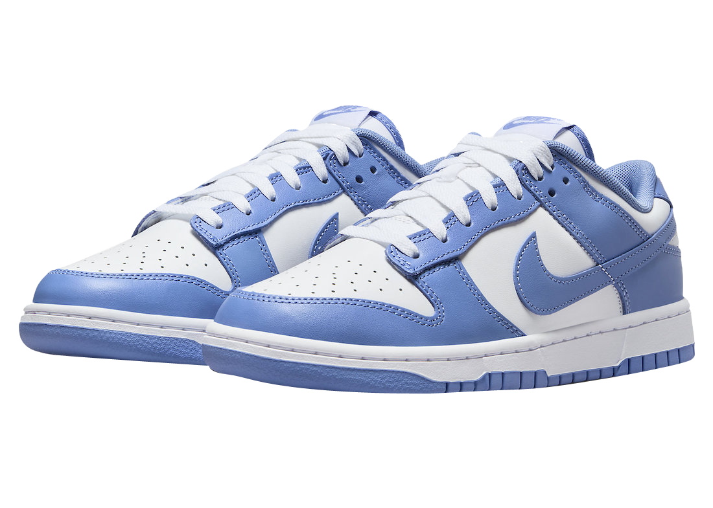
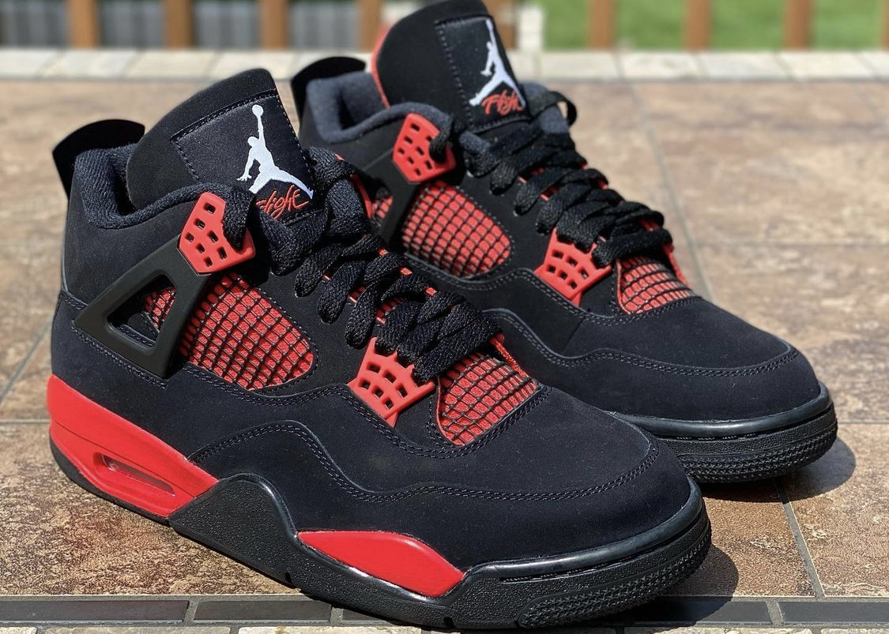

Here is some of my personal pairs of shoes that I feel are some of the most fire shoes to get. Hope I can put you on to some fly kicks for you to grab for yourself one day!!
Nike Dunks Polar Blue
Now although my favorite color is red, I do love me some blue as well. I've never really woren blue growing up, my parents did not allow us to wear colors, but I found blue is indeed a color I can pull off and then I recently grabbed these shoes about 4 weeks ago, and these shoes are so nice that I try not to wear them to much to crease them. But luckily, I got these for retail price and am very satisifed with the results.

Air Jordan Retro 4 Red Thunders
The retro 4 has to be one of my favorite all time Air Jordans. The colorway on this one goes crazy!! As soon as I seen them get posted around I knew I was going to get them. Although I had to pay after retail prices and spent about 400$ on them I am happy with that decision!

Best Colorway Ever😭😭😭
Air Jordan 12s A Ma Maniere
These shoes are so clean!! I actually got super lucky with these shoes, they were only in women sizes, but they had a 13 in woman which was my perfect fit for men! I took part in a contest with my friend who owns a shoe shop, it was a raffle for 20 bucks. I usually never win so I did not even watch the instagram live they had and my new was picked and I was so happy. I have the most perfect jacket for this outfit and these shoes always grab shoe heads attention when I am out with them.